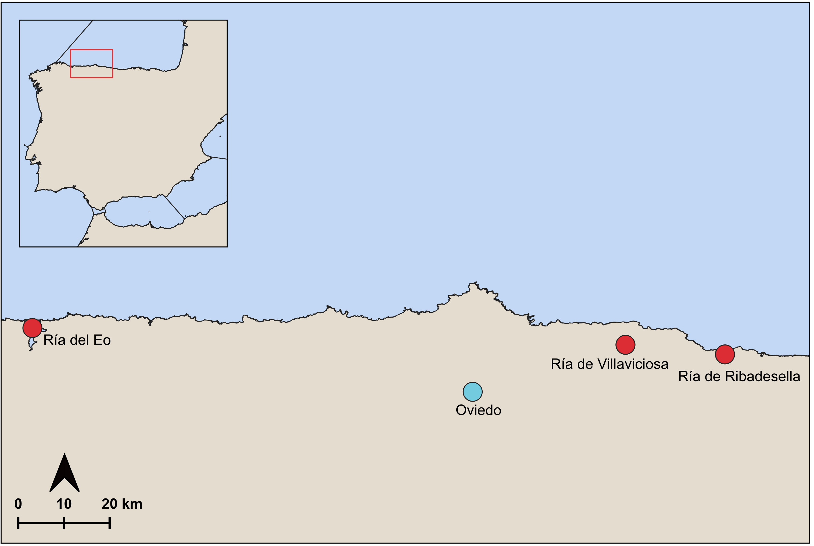

Salt marshes are coastal wetland ecosystems at the border between land and sea. They are common in estuaries and present fascinating and diverse habitats, occurring worldwide, primarily in middle and high latitudes (NOAA, 2024). Salt marshes are important in many ways. They have a high rate of primary production, provide habitats for many species, improve water quality by filtering pollutants, and even contribute to coastal safety by assisting in flood and erosion control and buffering wave action during storm surges (Boorman, 1999; King & Lester, 1995; Mickle, 1993; Silliman, 2014; Simas et al., 2001; Vernberg, 1993). They especially play an important role as blue carbon sinks. Their vegetation effectively captures atmospheric CO2 through photosynthesis and stores carbon in the soil, helping to counteract the effects of the greenhouse gas emissions on the Earth’s climate (Brook et al., 2025; Chmura et al., 2003; Mcleod et al., 2011). But the ecosystem faces multiple threats that reduce its stability. Climate change-driven impacts such as sea level rise, storm events, the associated erosion, and desiccation all contribute to marsh loss (Barras, 2007; Campbell et al., 2022; Silliman, 2014; Watson et al., 2017). Historically, anthropogenic drainage connected to urbanisation was a major contributor to marsh loss (Bromberg & Bertness, 2005; Davidson, 2014; Gedan et al., 2009). Alongside this, nutrient enrichment and pollution leading to eutrophication continue to pose a risk to these habitats (Borja et al., 2008; Bromberg & Bertness, 2005; Gedan et al., 2009). Littering and plastic pollution also have a significant impact. Marshes can act as traps for marine litter, with accumulation varying depending on the area and its distance from urban sources (Girones et al., 2024; Pinheiro et al., 2022). The most commonly found litter items in salt marshes and wetlands are plastic materials and foam, including caps, lids, plastic bags, polystyrene fragments, and fishing gear, with composition varying depending on proximity to urban areas and local currents (Masiá et al., 2021; Pinheiro et al., 2021; Rayon-Viña et al., 2018; Rech et al., 2018; Rivas-Iglesias et al., 2025). Litter can cause physical damage such as crushing vegetation or blocking light, and can also be ingested by wildlife, leading to injury or death (Uhrin & Schellinger, 2011; Viehman et al., 2011). Litter is also linked to the introduction of invasive species, as floating debris can act as a raft or vector, allowing species to hitchhike and settle in new areas (Bergmann, 2015; Gregory, 2009; Rech et al., 2016). Invasive species often show a broader tolerance to environmental stressors and can occupy a wider ecological niche, with that potentially removing native species (Barnes, 2002; Barnes & Milner, 2005; Gregory, 2009; Higgins & Richardson, 2014; Miralles et al., 2018; Rech et al., 2016). Although salt marshes can be restored, and restoration prior to major stress events can help reduce carbon release, ongoing threats are causing salt marsh degradation at a faster rate than recovery (Campbell et al., 2022; Macreadie et al., 2013; Mason et al., 2023) In the scope of this internship, three salt marsh sites in Asturias were visited: Ría de Villaviciosa, Ría del Eo, and Ría de Ribadesella. Ría de Villaviciosa and Ría del Eo are RAMSAR protected areas, while Ría de Ribadesella currently holds Natura 2000 status. When visiting the sites, littering was present in all areas. Although the gradient of pollution and litter type varied, this calls for further outreach and awareness. It shows the importance of education and calls for keeping protection statuses and improving protection where not yet in effect.

Fig 1. Map of field locations (in red) around Oviedo (in blue)
Salt marshes host a diverse plant and animal community that is highly specialised and perfectly adapted to its surroundings (Pennings & Bertness, 2001; Silliman, 2014; Vernberg, 1993). Zostera marina and Nanozostera noltei are two common marine angiosperms found in salt marshes across the northern hemisphere, where they are the dominant seagrasses of both the Pacific and Atlantic coasts for Zostera marina and atlantic coast and mediterranean for Nanozostera noltei (Boström et al., 2014; Green & Short, 2003a; Moore & Short, 2006; Short et al., 2011; Spalding et al., 2003). Both species are present in Ría de Villaviciosa and Ría del Eo, while only Nanozostera noltei is recorded at Ría de Ribadesella (Alba Moratilla & Hernández Palacios, 2012; Gobierno del Principado de Asturias, 1999, 2015). Although the two species share a similar distribution range, they occupy different zones within the estuary. Zostera marina grows in the lower areas, remaining permanently submerged, while Nanozostera noltei colonises higher zones that are exposed during low tide (Den Hartog, 1970; Harrison, 1982; Robertson & Mann, 1984). Both are considered key species and environmental indicators of ecosystem health (Boström et al., 2014; Brix et al., 1983; Karamfilov et al., 2019). They support biodiversity by providing shelter and nursery grounds for many species, contribute to food web dynamics, and help stabilise the coastline by reducing erosion (Davison et al., 1998; Green & Short, 2003b; Short et al., 2000, 2011; Spalding et al., 2003). Their ability to store carbon also makes them important blue carbon sinks (Mazarrasa et al., 2015; Röhr et al., 2016). Because of this, any threat to these sensitive plants, such as reduced light availability, sediment disturbance, or physical damage, can lead to the loss of Zostera marin and Nanozostera noltei meadows, with cascading effects on the whole ecosystem (Burkholder et al., 2007; Cabaço et al., 2008; Cabaço & Santos, 2007; Duarte et al., 2008; Erftemeijer & Robin Lewis, 2006).
Alba Moratilla, A., & Hernández Palacios, O. (2012). Ficha Informativa Ramsar (FIR): Ría de Villaviciosa (Ramsar Site no. 2037; Versión 2009-2012 adaptada al caso español). Consejería de Medio Ambiente y Desarrollo Rural, Principado de Asturias.
Barnes, D. K. A. (2002). Invasions by marine life on plastic debris. Nature, 416(6883), 808–809. https://doi.org/10.1038/416808a
Barnes, D. K. A., & Milner, P. (2005). Drifting plastic and its consequences for sessile organism dispersal in the Atlantic Ocean. Marine Biology, 146(4), 815–825. https://doi.org/10.1007/s00227-004-1474-8
Barras, J. A. (2007). Satellite Images and Aerial Photographs of the Effects of Hurricanes Katrina and Rita on Coastal Louisiana (Data Series) [Data Series].
Bergmann, M. (with Gutow, L., & Klages, M.). (2015). Marine Anthropogenic Litter. Springer International Publishing AG.
Boorman, L. A. (1999). Salt marshes – present functioning and future change. Mangroves and Salt Marshes, 3, 227–241.
Borja, A., Bricker, S. B., Dauer, D. M., Demetriades, N. T., Ferreira, J. G., Forbes, A. T., Hutchings, P., Jia, X., Kenchington, R., Marques, J. C., & Zhu, C. (2008). Overview of integrative tools and methods in assessing ecological integrity in estuarine and coastal systems worldwide. Marine Pollution Bulletin, 56(9), 1519–1537. https://doi.org/10.1016/j.marpolbul.2008.07.005
Boström, C., Baden, S., Bockelmann, A.-C., Dromph, K., Fredriksen, S., Gustafsson, C., Krause-Jensen, D., Möller, T., Nielsen, S. L., Olesen, B., Olsen, J., Pihl, L., & Rinde, E. (2014). Distribution, structure and function of Nordic eelgrass (Zostera marina) ecosystems: Implications for coastal management and conservation. Aquatic Conservation: Marine and Freshwater Ecosystems, 24(3), 410–434. https://doi.org/10.1002/aqc.2424
Brix, H., Lyngby, J. E., & Schierup, H.-H. (1983). Eelgrass (Zostera marina L.) as an Indicator Organism of Trace Metals in the Limt]ord, Denmark. 8(3), 165–181.
Bromberg, K. D., & Bertness, M. D. (2005). Reconstructing New England Salt Marsh Losses Using Historical Maps. Estuaries, 28(6), 823–832.
Brook, T., Millington-Drake, M., McGarrigle, A., Garbutt, A., & Rodriguez, K. (2025). State of the World’s Saltmarshes 2025. STATE OF THE WORLD.
Burkholder, J. M., Tomasko, D. A., & Touchette, B. W. (2007). Seagrasses and eutrophication. Journal of Experimental Marine Biology and Ecology, 350(1–2), 46–72. https://doi.org/10.1016/j.jembe.2007.06.024
Cabaço, S., Machás, R., Vieira, V., & Santos, R. (2008). Impacts of urban wastewater discharge on seagrass meadows (Zostera noltii). Estuarine, Coastal and Shelf Science, 78(1), 1–13. https://doi.org/10.1016/j.ecss.2007.11.005
Cabaço, S., & Santos, R. (2007). Effects of burial and erosion on the seagrass Zostera noltii. Journal of Experimental Marine Biology and Ecology, 340(2), 204–212. https://doi.org/10.1016/j.jembe.2006.09.003
Campbell, A. D., Fatoyinbo, L., Goldberg, L., & Lagomasino, D. (2022). Global hotspots of salt marsh change and carbon emissions. Nature, 612(7941), 701–706. https://doi.org/10.1038/s41586-022-05355-z
Chmura, G. L., Anisfeld, S. C., Cahoon, D. R., & Lynch, J. C. (2003). Global carbon sequestration in tidal, saline wetland soils. Global Biogeochemical Cycles, 17(4), 2002GB001917. https://doi.org/10.1029/2002GB001917
Davidson, N. C. (2014). How much wetland has the world lost? Long-term and recent trends in global wetland area. Marine and Freshwater Research, 65(10), 934–941. https://doi.org/10.1071/MF14173
Davison, D. M., Hughes, D. J., & Associates, D. D. (1998). An overview of dynamics and sensitivity characteristics for conservation management of marine SACs. 1, 95.
Den Hartog, C. (1970). The Sea-grasses of the World. North-Holland Pub. Co. https://archive.org/details/seagrassesofworl0000hart/page/290/mode/2up
Duarte, C. M., Borum, J., Short, F. T., & Walker, D. I. (2008). Seagrass ecosystems: Their global status and prospects. In N. V. C. Polunin (Ed.), Aquatic Ecosystems (1st edn, pp. 281–294). Cambridge University Press. https://doi.org/10.1017/CBO9780511751790.025
Erftemeijer, P. L. A., & Robin Lewis, R. R. (2006). Environmental impacts of dredging on seagrasses: A review. Marine Pollution Bulletin, 52(12), 1553–1572. https://doi.org/10.1016/j.marpolbul.2006.09.006
Gedan, K. B., Silliman, B. R., & Bertness, M. D. (2009). Centuries of Human-Driven Change in Salt Marsh Ecosystems. Annual Review of Marine Science, 1(1), 117–141. https://doi.org/10.1146/annurev.marine.010908.163930
Girones, L., Adaro, M. E., Pozo, K., Baini, M., Panti, C., Fossi, M. C., Marcovecchio, J. E., Ronda, A. C., & Arias, A. H. (2024). Spatial distribution and characteristics of plastic pollution in the salt marshes of Bahía Blanca Estuary, Argentina. Science of The Total Environment, 912, 169199. https://doi.org/10.1016/j.scitotenv.2023.169199
Gobierno del Principado de Asturias. (1999). Ficha Informativa de los Humedales de Ramsar: Ría del Eo. Ramsar Convention Secretariat.
Gobierno del Principado de Asturias. (2015). Natura 2000—Standard Data Form: Ría de Ribadesella-Ría de Tinamayor (ES0000319) (No. ES0000319). European Environment Agency (Natura 2000 network). https://naturalezadeasturias.es/upload/0000319.pdf
Green, E. P., & Short, F. T. (2003a). World Atlas of Seagrasses. https://dn720004.ca.archive.org/0/items/worldatlasofseag03gree/worldatlasofseag03gree.pdf
Green, E. P., & Short, F. T. (2003b). World Atlas of Seagrasses. University of California Press. https://www.academia.edu/38062931/World_Atlas_of_Seagrasses
Gregory, M. R. (2009). Environmental implications of plastic debris in marine settings—Entanglement, ingestion, smothering, hangers-on, hitch-hiking and alien invasions. Philosophical Transactions of the Royal Society B: Biological Sciences, 364(1526), 2013–2025. https://doi.org/10.1098/rstb.2008.0265
Harrison, P. G. (1982). Spatial and temporal patterns in abundance of two intertidal seagrasses, Zostera americana den hartog and Zostera marina L. Aquatic Botany, 12, 305–320. https://doi.org/10.1016/0304-3770(82)90024-9
Higgins, S. I., & Richardson, D. M. (2014). Invasive plants have broader physiological niches. Proceedings of the National Academy of Sciences, 111(29), 10610–10614. https://doi.org/10.1073/pnas.1406075111
Karamfilov, V., Berov, D., & Panayotidis, P. (2019). Using Zostera noltei biometrics for evaluation of the ecological and environmental quality status of Black Sea coastal waters. Regional Studies in Marine Science, 27, 100524. https://doi.org/10.1016/j.rsma.2019.100524
King, S. E., & Lester, J. N. (1995). The value of salt marsh as a sea defence. Marine Pollution Bulletin, 30(3), 180–189. https://doi.org/10.1016/0025-326X(94)00173-7
Macreadie, P. I., Hughes, A. R., & Kimbro, D. L. (2013). Loss of ‘Blue Carbon’ from Coastal Salt Marshes Following Habitat Disturbance. PLoS ONE, 8(7), e69244. https://doi.org/10.1371/journal.pone.0069244
Masiá, P., Ardura, A., Gaitán, M., Gerber, S., Rayon-Viña, F., & Garcia-Vazquez, E. (2021). Maritime ports and beach management as sources of coastal macro-, meso-, and microplastic pollution. Environmental Science and Pollution Research, 28(24), 30722–30731. https://doi.org/10.1007/s11356-021-12821-0
Mason, V. G., Burden, A., Epstein, G., Jupe, L. L., Wood, K. A., & Skov, M. W. (2023). Blue carbon benefits from global saltmarsh restoration. Global Change Biology, 29(23), 6517–6545. https://doi.org/10.1111/gcb.16943
Mazarrasa, I., Marbà, N., Lovelock, C. E., Serrano, O., Lavery, P. S., Fourqurean, J. W., Kennedy, H., Mateo, M. A., Krause-Jensen, D., Steven, A. D. L., & Duarte, C. M. (2015). Seagrass meadows as a globally significant carbonate reservoir. Biogeosciences, 12(16), 4993–5003. https://doi.org/10.5194/bg-12-4993-2015
Mcleod, E., Chmura, G. L., Bouillon, S., Salm, R., Björk, M., Duarte, C. M., Lovelock, C. E., Schlesinger, W. H., & Silliman, B. R. (2011). A blueprint for blue carbon: Toward an improved understanding of the role of vegetated coastal habitats in sequestering CO2. Frontiers in Ecology and the Environment, 9(10), 552–560. https://doi.org/10.1890/110004
Mickle, A. M. (1993). Pollution Filtration by Plants in Wetland-Littoral Zones. Proceedings of the Academy of Natural Sciences of Philadelphia, 144, 282–290.
Miralles, L., Gomez-Agenjo, M., Rayon-Viña, F., Gyraitė, G., & Garcia-Vazquez, E. (2018). Alert calling in port areas: Marine litter as possible secondary dispersal vector for hitchhiking invasive species. Journal for Nature Conservation, 42, 12–18. https://doi.org/10.1016/j.jnc.2018.01.005
Moore, K. A., & Short, F. T. (2006). Zostera: Biology, Ecology, and Management. In SEAGRASSES: BIOLOGY, ECOLOGYAND CONSERVATION (pp. 361–386). Springer Netherlands. https://doi.org/10.1007/978-1-4020-2983-7_16
NOAA. (2024). What is a salt marsh? https://oceanservice.noaa.gov/facts/saltmarsh.html
Pennings, S., & Bertness, M. (2001). Salt marsh communities. In Sinauer Associates Inc (pp. 289–316).
Pinheiro, L. M., Britz, L. M. K., Agostini, V. O., Pérez-Parada, A., García-Rodríguez, F., Galloway, T. S., & Pinho, G. L. L. (2022). Salt marshes as the final watershed fate for meso- and microplastic contamination: A case study from Southern Brazil. Science of The Total Environment, 838, 156077. https://doi.org/10.1016/j.scitotenv.2022.156077
Pinheiro, L. M., Carvalho, I. V., Agostini, V. O., Martinez-Souza, G., Galloway, T. S., & Pinho, G. L. L. (2021). Litter contamination at a salt marsh: An ecological niche for biofouling in South Brazil. Environmental Pollution, 285, 117647. https://doi.org/10.1016/j.envpol.2021.117647
Rayon-Viña, F., Miralles, L., Gómez-Agenjo, M., Dopico, E., & Garcia-Vazquez, E. (2018). Marine litter in south Bay of Biscay: Local differences in beach littering are associated with citizen perception and awareness. Marine Pollution Bulletin, 131, 727–735. https://doi.org/10.1016/j.marpolbul.2018.04.066
Rech, S., Borrell Pichs, Y. J., & García-Vazquez, E. (2018). Anthropogenic marine litter composition in coastal areas may be a predictor of potentially invasive rafting fauna. PLOS ONE, 13(1), e0191859. https://doi.org/10.1371/journal.pone.0191859
Rech, S., Borrell, Y., & García-Vazquez, E. (2016). Marine litter as a vector for non-native species: What we need to know. Marine Pollution Bulletin, 113(1–2), 40–43. https://doi.org/10.1016/j.marpolbul.2016.08.032
Rivas-Iglesias, L., Gutiérrez-Rodríguez, Á., Fernández, S., Casement, E., Menéndez-Teleña, D., Carrera-Rodríguez, I., Dopico, E., Soto-López, V., & Garcia-Vazquez, E. (2025). Citizen science study on maritime traffic and plastic debris in Asturias estuaries. Journal of Marine Systems, 252, 104153. https://doi.org/10.1016/j.jmarsys.2025.104153
Robertson, A. I., & Mann, K. H. (1984). Disturbance by ice and life-history adaptations of the seagrassZostera marina. Marine Biology, 80(2), 131–141. https://doi.org/10.1007/BF02180180
Röhr, M. E., Boström, C., Canal-Vergés, P., & Holmer, M. (2016). Blue carbon stocks in Baltic Sea eelgrass ( Zostera marina ) meadows. Biogeosciences, 13(22), 6139–6153. https://doi.org/10.5194/bg-13-6139-2016
Short, F. T., Burdick, D. M., Short, C. A., Davis, R. C., & Morgan, P. A. (2000). Developing success criteria for restored eelgrass, salt marsh and mud flat habitats. Ecological Engineering, 15(3–4), 239–252. https://doi.org/10.1016/S0925-8574(00)00079-3
Short, F. T., Polidoro, B., Livingstone, S. R., Carpenter, K. E., Bandeira, S., Bujang, J. S., Calumpong, H. P., Carruthers, T. J. B., Coles, R. G., Dennison, W. C., Erftemeijer, P. L. A., Fortes, M. D., Freeman, A. S., Jagtap, T. G., Kamal, A. H. M., Kendrick, G. A., Judson Kenworthy, W., La Nafie, Y. A., Nasution, I. M., … Zieman, J. C. (2011). Extinction risk assessment of the world’s seagrass species. Biological Conservation, 144(7), 1961–1971. https://doi.org/10.1016/j.biocon.2011.04.010
Silliman, B. R. (2014). Salt marshes. Current Biology, 24(9), R348–R350. https://doi.org/10.1016/j.cub.2014.03.001
Simas, T., Nunes, J. P., & Ferreira, J. G. (2001). Effects of global climate change on coastal salt marshes. Ecological Modelling, 139(1), 1–15. https://doi.org/10.1016/S0304-3800(01)00226-5
Spalding, M., Taylor, M., Ravilious, C., Short, F., & Green, E. (2003). THE DISTRIBUTION AND STATUS OF SEAGRASSES.
Uhrin, A. V., & Schellinger, J. (2011). Marine debris impacts to a tidal fringing-marsh in North Carolina. Marine Pollution Bulletin, 62(12), 2605–2610. https://doi.org/10.1016/j.marpolbul.2011.10.006
Vernberg, F. J. (1993). Salt-marsh processes: A Review. Environmental Toxicology and Chemistry, 12(12), 2167–2195. https://doi.org/10.1002/etc.5620121203
Viehman, S., Vander Pluym, J. L., & Schellinger, J. (2011). Characterization of marine debris in North Carolina salt marshes. Marine Pollution Bulletin, 62(12), 2771–2779. https://doi.org/10.1016/j.marpolbul.2011.09.010
Watson, E. B., Wigand, C., Davey, E. W., Andrews, H. M., Bishop, J., & Raposa, K. B. (2017). Wetland loss patterns and inundation-productivity relationships prognosticate widespread salt for southern New England. Estuaries and Coasts : Journal of the Estuarine Research Federation, 40(3), 662–681. https://doi.org/10.1007/s12237-016-0069-1